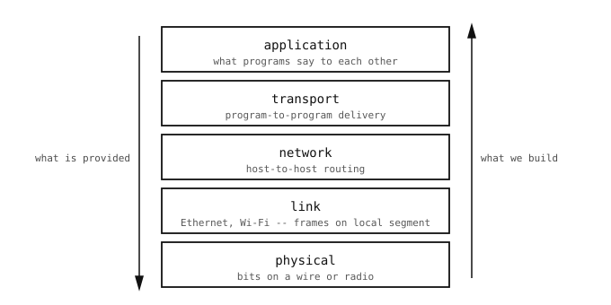

9.2. Slojeviti protokoli¶
Slanje sličice s kamere na poslužitelj u drugom gradu znači rješavanje nekoliko problema odjednom. Električni signal mora prijeći prvu žicu. Bajtovi na toj žici moraju pronaći put kroz lokalni preklopnik. Lokalna mreža mora predati poruku onome što se nalazi između nje i ostatka interneta. Paketi koji prežive put moraju se ponovno sastaviti po redu. Primatelj mora znati kojem od svojih programa da ih preda. A sami bajtovi moraju značiti nešto oko čega se obje strane slažu.
Pokušaj rješavanja svega toga u jednom bloku koda bio bi neupravljiv. Standardni odgovor je podijeliti posao na slojeve. Svaki sloj rješava jedan dobro definiran problem i izlaže jednostavnu uslugu sloju iznad. Program uvijek razgovara samo sa slojem izravno ispod sebe; slojevi ispod tog su nevidljivi.

Svaki sloj mrežnog niza rješava jedan problem i predaje čistu apstrakciju sljedećem.¶
9.2.1. Pet slojeva¶
Nazivi u nastavku oni su koje koristi ostatak ovog odjeljka. Potječu iz standardnog modela oko kojeg su mreže projektirane. Točne granice među slojevima ponekad su nejasne, ali uloga koju svaki igra je stabilna.
Fizički sloj. Premješta bitove između dva uređaja na istoj žici ili radioveze. Naponske razine, svjetlosni impulsi, RF modulacija. Posao kamere ovdje je uglavnom uključiti pravi kabel ili se pridružiti pravoj bežičnoj mreži; silicij obavlja ostalo.
Podatkovni sloj. Premješta sličice (male skupine bajtova) između dva uređaja koja dijele lokalni segment. Dodaje hardverske adrese kako bi se svaka sličica mogla usmjeriti na jednog određenog susjeda. Ethernet i Wi-Fi dvije su podatkovne tehnologije s kojima se kamera susreće u praksi.
Mrežni sloj. Premješta pakete između bilo koja dva uređaja na internetu, a ne samo na istom lokalnom segmentu. Dodaje adresu na razini softvera koja identificira računalo neovisno o tome na kojem je kabelu te mehanizam usmjeravanja koji prebacuje paket s jednog lokalnog segmenta na sljedeći dok ne stigne. Ovo je prvi sloj na kojem Python kod kamere počinje imati nešto reći.
Transportni sloj. Smješta se povrh paketa i nudi isporuku između programa na dva računala, a ne samo između samih računala. Dvije su varijante uobičajene: jedna isporučuje povezani, uređeni tok bajtova (radni konj za najveći dio prometa), druga isporučuje samostalne poruke koje putuju neovisno jedna o drugoj (koristi se kada je niski režijski trošak važniji od jamstava). Dodaje brojeve portova kako bi više programa na istom računalu moglo voditi razgovore paralelno.
Aplikacijski sloj. Sve iznad transporta: protokoli koji bajtovima daju značenje. Oni koje web preglednik govori da bi učitao stranice – i oni iza gotovo svake druge internetske usluge koju čitatelj već svakodnevno koristi – žive ovdje. Vodič detaljno obrađuje transport; ovaj sloj dobiva vlastiti nastavni odjeljak.
9.2.2. Kako se slojevi slažu tijekom izvođenja¶
Kada kamera šalje bajtove preko mreže, svaki sloj dodaje vlastito zaglavlje ispred podataka, poput umetanja jedne omotnice u drugu omotnicu:
Bajtovi aplikacije ulaze prvi.
Transportni sloj omota ih malim zaglavljem koje govori kojem programu pripadaju (broj porta).
Mrežni sloj omota to zaglavljem koje govori kojem su računalu namijenjeni (adresa na razini softvera).
Podatkovni sloj omota to zaglavljem koje govori kojem uređaju na lokalnom segmentu ih predati sljedećem (hardverska adresa).
Fizički sloj pretvara cijeli paket u bitove na žici.
Na drugom kraju, svaki sloj skida vlastito zaglavlje i predaje ostatak prema gore. Aplikacija primatelj dobiva svoje bajtove natrag ne znajući da su mrežni, podatkovni i fizički sloj ikada postojali.
Ovo umetanje razlog je zašto vodič ide odozdo prema gore. Razumijevanje onoga što radi sloj ispod čini sloj iznad neizbježnim. Dva donja sloja obrađena su na po jednoj stranici jer iz Pythona gotovo nema ničega za konfigurirati. Od mrežnog sloja naviše tempo se usporava kako Pythonova uloga postaje veća.